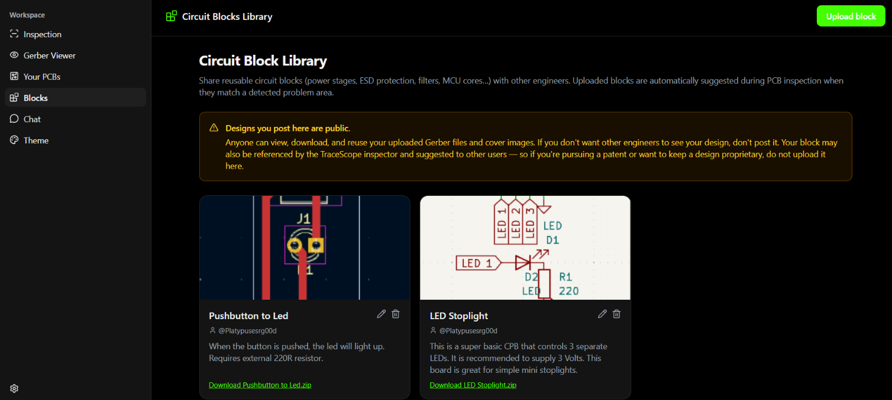

Problem: Standard design-rule checks may miss issues that lead to PCB failures. The project write-up describes a need for another way to review PCB designs before fabrication.
Objective: Build an app that reviews uploaded Gerber files, explains possible failure points and helps users inspect their designs.
2. TOOLS AND TECHNOLOGIES
Hardware, components and materials: A computer and PCB Gerber files. Specific boards or components used during development are not listed.
Software and programming languages: Lovable, AI-assisted analysis, a Gerber viewer, and the Lovable-hosted backend/database. Programming languages are not identified.
3. SOLUTION DESIGN AND DEVELOPMENT
Users describe a board, upload Gerber files and run an analysis. The app reports potential issues as warnings or severe problems and places editable arrows over the board to help locate them. Other features described in the write-up include inspection history, a PCB-focused AI chat, a community page, a Gerber viewer and account settings.
4. CHALLENGES AND PROBLEM-SOLVING
The write-up does not identify specific development challenges or how the team handled them. It does describe the need to make issue markers editable and keep the chatbot focused on PCB questions.
5. TESTING AND RESULTS
The document describes the intended features and workflow, but does not include test cases, accuracy measurements or fabrication results.
6. LESSONS LEARNED AND FUTURE IMPROVEMENTS
The project provided experience building an engineering-focused app with a team at Inspirit AI summer camp. Specific lessons and planned improvements are not listed in the write-up.
7. INDIVIDUAL CONTRIBUTIONS AND RESOURCES
This was a group project created at Inspirit AI summer camp using Lovable. The write-up does not separate each team member's contributions.
SUPPORTING MATERIALS
[x] Project photographs - three app screenshots are shown below.
[ ] Demonstration video - not included.
[ ] Source code - not linked.
[ ] Diagrams and schematics - not applicable to this app overview.
[ ] Test results - formal test cases and accuracy measurements are not included.
[x] Reference links - project PDF and live app.
TraceScope landing pagePCB analysis workflow

Circuit block library
Boids
Project name: Boids Date: November 5, 2025 Category: Coding
1. PROBLEM AND OBJECTIVE
Problem: The write-up does not describe a real-world problem; it focuses on exploring how flocking settings affect survival in a simulation.
Objective: Build an interactive Boid simulation and test which individual settings and setting combinations affect the number of survivors.
2. TOOLS AND TECHNOLOGIES
Hardware, components and materials: A computer.
Software and programming languages: Scratch, Google Docs or Microsoft Word, Google Sheets or Microsoft Excel, and Photopea. The simulation was built with Scratch blocks.
3. SOLUTION DESIGN AND DEVELOPMENT
The simulation includes an interactive settings program, boids and a predator. The project used a single-variable matrix to test five settings independently at low and high values, then a multi-variable matrix to test 32 combinations. Each simulation loop lasted ten seconds.
4. CHALLENGES AND PROBLEM-SOLVING
The write-up records bugs in the predator and in the low/high setting cycles. These bugs were fixed during development.
5. TESTING AND RESULTS
The single-variable matrix was run three times and the multi-variable matrix ten times. Results were exported for Google Sheets, averaged by setting and graphed. The report does not include the graphs or state which settings produced the highest survival.
6. LESSONS LEARNED AND FUTURE IMPROVEMENTS
The project practiced Scratch block coding, debugging, repeated trials and comparing one setting at a time with combined settings. A useful next step would be to include the result graphs and summarize the strongest findings.
7. INDIVIDUAL CONTRIBUTIONS AND RESOURCES
The report describes creating the simulation and test programs but does not say whether there were collaborators. It lists a computer, Scratch, office document and spreadsheet tools, and Photopea.
SUPPORTING MATERIALS
[x] Project photographs - the simulation and settings screen are shown below.
[ ] Demonstration video - not included.
[x] Source code - available through the Scratch project link.
[ ] Diagrams and schematics - not applicable.
[ ] Test results - the test process is described, but result graphs/data are not attached.
[x] Reference links - project PDF and Scratch simulation.
Boids simulation controls and results panel
Python Mouse
Project name: Python Mouse Date: December 5, 2024 Category: Coding
1. PROBLEM AND OBJECTIVE
Problem: The project write-up frames this as a learning project rather than a problem-solving application.
Objective: Learn image recognition by tracking the user's eyes and moving the computer cursor to follow them.
2. TOOLS AND TECHNOLOGIES
Hardware, components and materials: A computer, camera and mouse.
Software and programming languages: Python and an image-recognition library; the library name is not listed. A tutorial was used.
3. SOLUTION DESIGN AND DEVELOPMENT
The project combined camera access, mouse control and an image-recognition library to track the eyes. The cursor then followed the detected eye movement.
4. CHALLENGES AND PROBLEM-SOLVING
The write-up does not describe specific bugs or troubleshooting steps.
5. TESTING AND RESULTS
The described result is that the cursor followed the eyes. The document does not provide a formal test method or accuracy measurements.
6. LESSONS LEARNED AND FUTURE IMPROVEMENTS
The project introduced Python and image recognition. A future version could document the library, track accuracy and explain how the cursor mapping was tuned.
7. INDIVIDUAL CONTRIBUTIONS AND RESOURCES
The write-up says a tutorial was followed but does not identify which parts were completed independently or name the tutorial.
SUPPORTING MATERIALS
[ ] Project photographs - an app screenshot is still needed.
[ ] Demonstration video - not included.
[ ] Source code - not linked.
[ ] Diagrams and schematics - not applicable.
[x] Test results - cursor-following behavior is described, without measurements.
[x] Reference link - project write-up PDF.
Failed Developer Board v1
Project name: Failed Developer Board v1 Date: About August 27, 2026 (estimated from "three months ago") Category: Electronics
1. PROBLEM AND OBJECTIVE
Problem: The existing write-up does not state a specific problem the board was meant to solve.
Objective: Design and build a developer board based on a Phil's Lab video, with an MCU, USB Type-B, SWD communication, indicator LEDs and a voltage regulator.
2. TOOLS AND TECHNOLOGIES
Hardware, components and materials: MCU, USB Type-B connector, SWD interface, two indicator LEDs, voltage regulator and supporting components. The MCU model and component values are not listed. Boards were manufactured by JLCPCB and soldered by hand.
Software and programming languages: PCB schematic and layout software was used, but its name is not listed. No firmware details are included.
3. SOLUTION DESIGN AND DEVELOPMENT
The schematic was created first, followed by the PCB layout. The finished design was sent to JLCPCB. After the boards arrived, the components were soldered onto them.
4. CHALLENGES AND PROBLEM-SOLVING
After assembly, neither indicator LED turned on and the board could not be connected for communication. The write-up does not document the root cause or a repair; the next step was to begin a simpler MK2 design.
5. TESTING AND RESULTS
The board was plugged in and a connection was attempted. The LEDs stayed off and the connection failed, so version 1 did not work as intended.
6. LESSONS LEARNED AND FUTURE IMPROVEMENTS
The project increased experience and confidence in electronics and PCB design. A simpler MK2 was planned. The report does not yet identify which circuit or layout issues should be changed.
7. INDIVIDUAL CONTRIBUTIONS AND RESOURCES
The write-up describes designing and assembling the board in first person. The design was based on a Phil's Lab video; the specific video link is not listed.
SUPPORTING MATERIALS
[ ] Project photographs - assembled board photos are still needed.
[ ] Demonstration video - not included.
[ ] Source code and PCB files - not linked.
[ ] Diagrams and schematics - schematic and PCB layout are not included.
[x] Test results - the failed power-on and connection attempt are described.
[x] Reference link - project write-up PDF; the referenced Phil's Lab video URL is not listed.